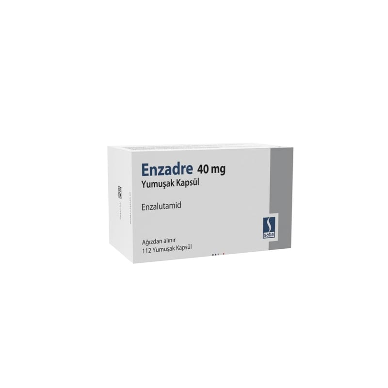

Enzadre 40 mg Yumuşak Kapsül, 112 Adet

Ne için kullanılır
KT · Bölüm 1ENZADRE, enzalutamid olarak adlandırılan bir ilaç içerir.
ENZADRE, uygun sayıda kapsül içeren blisterlerde, 112 adet yumuşak kapsül, kullanma talimatı ile birlikte sunulmaktadır.
ENZADRE, erkeklik hormonunu baskılayan cerrahi tedavilere ya da hormon terapilerine artık cevap vermeyen ya da tümörün iç organlar dışında vücudun diğer bölgelerine yayılım gösterdiği ancak erkeklik hormonunu baskılayan cerrahi tedavilere ya da hormon terapilerine cevap veren prostat kanseri olan erişkin erkek hastaların tedavisinde kullanılır.
ENZADRE, hem tümörün vücudun diğer kısımlarına yayılma riski yüksek olan, ancak henüz yayılım görülmeyen (metastatik olmayan hastalık), hem de tümörün vücudun diğer
bölgelerinde tespit edilmiş olduğu (metastatik hastalık) erişkin erkek prostat kanseri hastalarında erkeklik hormonu seviyesini baskılayan tedaviler ile kullanılır.
ENZADRE, metastatik hasta grupları içinde, kemoterapi kullanmış kanda prostata özgü antijen (PSA) ve görüntüleme yöntemleri ile hastalığın ilerlemesinin gösterilmiş olduğu, daha önce etkin madde abirateron içeren ürünü kullanmamış, kanda erkeklik hormon seviyesinin uygun şekilde baskılanmış olduğu (erbezleri alınmış erkeklerin erkeklik hormon seviyelerinde) veya erkeklik hormonunu baskılayan tedavilerin başarısız olduğu, kemoterapi için uygun olmayan, kemik iliği depoları yetersiz olan ve/veya şeker hastalığı tanısı olan vücudun diğer bölümlerine yayılmış prostat kanserli erişkin erkekleri tedavi etmek için kullanılır.
ENZADRE testosteron gibi androjen adı verilen erkeklik hormonlarını etkililiğini keserek iş gören bir ilaçtır. Enzalutamid erkeklik hormonlarının etkililiğini keserek prostat kanseri hücrelerinin büyümesini ve bölünmesini durdurur.